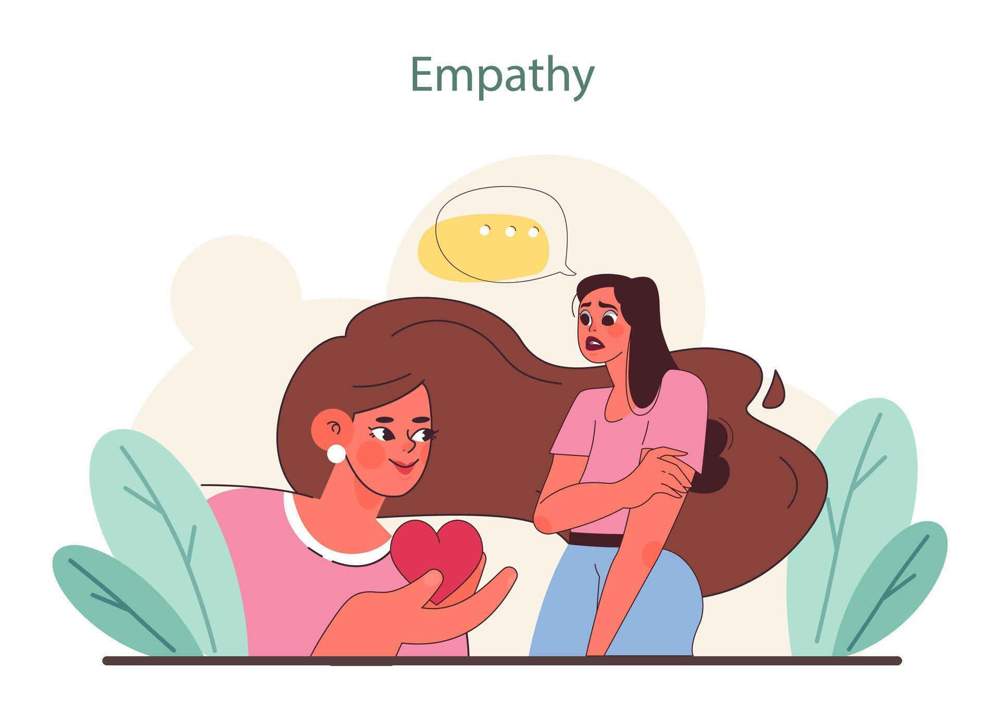
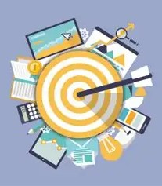
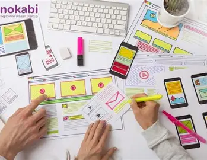
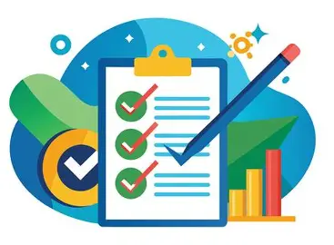
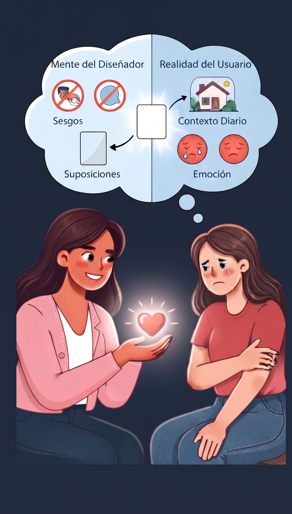
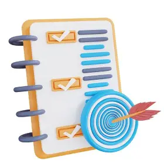
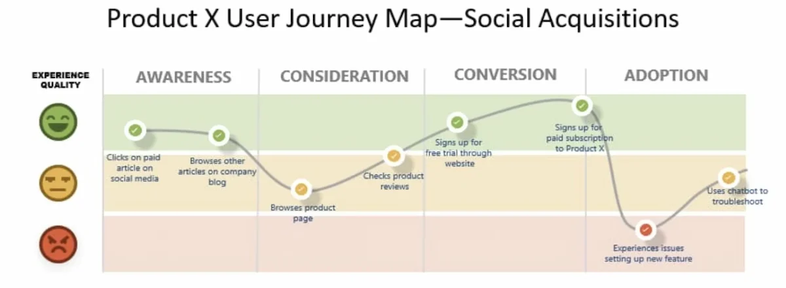

DISEÑO CENTRADO EN EL USUARIO
Descubre qué es el Diseño Centrado en el Usuario (DCU) y por qué es el secreto detrás de los productos digitales que realmente amamos usar.
¿Alguna vez te has perdido en una página web?
Eso sucede cuando el diseño se basa en suposiciones, no en personas. El resultado es frustración, abandono y un producto que nadie quiere usar. Construir a ciegas e ignorar al usuario es el camino más rápido al fracaso digital.

Para evitar un mal diseño y garantizar una experiencia verdaderamente útil, podemos basarnos en las siguientes fases metodológicas:
Definición
El diseño centrado en el usuario (DCU, también conocido en inglés como human-centred design) es una filosofía que pone al usuario y sus necesidades e intereses en el centro del proceso de diseño del producto u objeto, desde su concepción y durante su desarrollo.
Las 5 fases del DCU
Empatizar
Ponte en sus zapatos. Investiga a fondo quiénes son tus usuarios, qué necesitan en su día a día y qué obstáculos enfrentan antes de proponer cualquier solución.
Definir
Encuentra el problema real. Filtra toda la información recolectada durante la investigación para plantear exactamente qué necesidades vas a resolver.

Idear
Imagina las soluciones. Es el momento de realizar lluvias de ideas sin filtros ni límites; en esta etapa ninguna propuesta creativa es mala.

Prototipar
Hazlo tangible. Crea versiones rápidas, económicas y de baja fidelidad de tus ideas principales para ver cómo funcionarían en la práctica.

Evaluar
Prueba y aprende. Pon tu prototipo directamente en las manos de usuarios reales, observa en qué puntos se confunden y corrige errores a tiempo.

Detalle de Subtemas y Fases
1. Empatizar
En el ámbito del DCU y la experiencia de usuario (UX), la empatía va mucho más allá de una simple suposición; se define como la capacidad metodológica y cognitiva de suspender nuestros propios sesgos y modelos mentales para comprender profundamente la realidad, el contexto físico, las necesidades cotidianas y las emociones genuinas del usuario final al interactuar con su entorno.

2. Definir
En la fase analítica, la empatía actúa como un instrumento metodológico clave para decodificar el comportamiento humano. Su propósito fundamental es estructurar los hallazgos cualitativos y transformar los problemas detectados en oportunidades claras de innovación, usabilidad y mejora continua dentro de la arquitectura del proyecto digital.

3. Idear
La ideación empática es la fase creativa donde los insights, dolores y expectativas descubiertos durante la investigación profunda se traducen en soluciones tangibles. Utiliza la empatía como un filtro estricto de viabilidad humana para asegurar que cada concepto responda estrictamente a la realidad de la persona.

4. Prototipar
La prototipación empática consiste en la materialización rápida y de bajo costo de las ideas concebidas, con el único propósito de ponerlas frente al usuario para observar sus reacciones espontáneas, validar supuestos de diseño y medir el impacto real de la solución en su contexto diario sin desarrollos complejos.
5. Evaluar
La evaluación empática representa la instancia crítica de análisis donde se observa y mide de cerca el desempeño, el nivel de satisfacción y la reacción emocional del usuario frente a una solución ya implementada, priorizando siempre su experiencia subjetiva para detectar fricciones ocultas y asegurar el éxito del producto.
Infografía o Resumen
